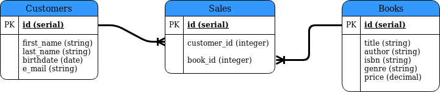

Objective 1.2 - Identifying the steps involved in a logical data model
A logical data model builds on the conceptual data model. Here are the main steps involved:
- Create a logical table for each entity defined in the conceptual data model.
- For each table, identify all the fields needed. Include the data type for each field.
- Make sure that each data field is atomic.
- Identify the primary key fields for each table and determine exactly how the tables will be linked.
You will have to work with your client some to ensure that you are creating all the necessary fields. Consulting with people who have expertise in data mining related to the database application can be helpful at this stage as well. You are essentially setting up the database design on paper without actual building the physical database. Therefore, your logical data model should be able to work with any relational database.
Building upon the conceptual data model we developed for a bookstore, here is diagram showing the logical data model:

Note that we have identified the primary key for each table. In addition, we have data types for each field. The data types are generic. For a field like first_name the data type listed is string. When you actually implement the physical data model, you will select the actual database. A data type like string would actually be set to varchar (variable character data) with a limit on the maximum length of the characters. Or, if the database being used is PostgreSQL, the data type used would be text (also a variable length field, but with no limit to the length). The one exception to being generic is the use of serial for the id fields. The serial data type is not used in all relational databases. For example, MySQL has no serial type. In PostgreSQL, the serial declaration is short hand for:
integer not null default nextval('customers_id_seq')if this was for a table called customers . So, serial is just used here to stand for a non-null integer that can have its value determined by a sequence. So, serial is just used for convenience here.
The diagram is a little more careful about the placement of the ends of the one-to-many connections. If you look at the link between the Customers table and the Sales table, you can see that one end connects to the id field of the Customers table and the other end connects to the customer_id field of the Sales table. Similarly, the book_id field of the Sales table is linked to the id field of the Books table. These links show explicitly how the three tables are going to be related.
Now that we have the logical data model completed, we can go on to the Physical data model .